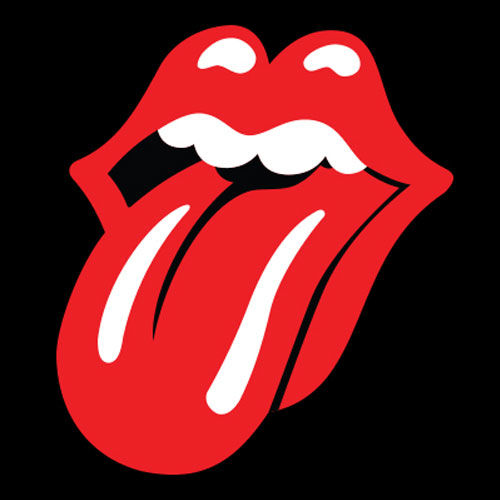

Salut ! C'est Théophile Delorme 💪

Salut ! Je m'appelle Théophile, j'ai 19 ans et je suis en première année d'école de commerce à l'IESEG à Paris. Dans la vie, j'adore le sport, la musique et faire la fête avec mes amis. Dans le sport je suis particulièrement la course à pied et le tennis. Mes sportifs préférés sont Eliud Kipchoge et Rafael Nadal. Aussi je suis passionée de musique en tout genre mais plus particulièrment en Rock'n roll ! 🤘.
Classement ATPSport 🎾
J'ai pratique beaucoup de sport dans ma vie : judos, handball, tennis, natation et athlétisme. Je pratique le tennis depuis l'âge de 5 ans mais je ne joue que pour le plaisir avec mes amis. De plus, j'ai fais de l'athétisme en compétition pendant 5 ans où je suis allé deux fois aux championnat de France UGSEL par équipe. J'adore autant pratique un sport que de suivre et d'observer les meilleurs.
La musique🎧
J'écoute de la musique depuis tout petit car mon père est un grand fan de rock'n roll. Par la suite j'ai découvert d'autres genres musicaux par moi même, comme le rap et la pop. J'ai également appris la guitar pendant 5 ans. Ce que j'aime encore plus dans la musique c'est le nombre de types de musiques différentes qui permet à chacun de trouver ce qu'il cherche. Aussi, c'est un art qui permet de retranscrire facilement beaucoup d'émotions différentes.
